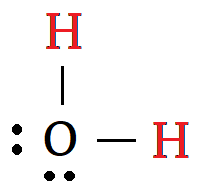

Equilibirium

Water molecules can randomly break apart according to the reaction: $$\mathrm{H_2O \rightarrow H^{+} + OH^{-}}$$
- The ions will eventually reunite to reform a water molecule.
- At any time, a small fraction of water molecules will be ions.
- In pure water, the number of hydrogen ions and the hydroxide ions will be equal.
- Water is neutral when the \(\mathrm{H^+}\) and \(\mathrm{OH^-}\) are balanced.
Acids
Adding a substance that produces hydrogen ions when it dissolves will interfere with this balance: $$\mathrm{HCl \rightarrow H^{+} + Cl^{-}}$$
- Substances that increase the concentration of \(\mathrm{H^+}\) are called acids.
- This definition of acid was created by Svante Arrhenius.
- Acids are often corrosive.
- Acids that are edible (vinegar, citrus fruit) have a sour or tangy taste.
Bases
Adding a substance that produces hydroxide ions when it dissolves will interfere with the \(\mathrm{H^+}\) versus \(\mathrm{OH^-}\) balance too: $$\mathrm{NaOH \rightarrow {Na}^{+} + OH^{-}}$$
- Substances that increase the concentration of \(\mathrm{OH^-}\) are called bases.
- Like acids, bases are often corrosive.
- Bases tend to have a bitter taste.
pH
Acidity/basicity of a solution is described by a number called pH (power of hydrogen) which indicates how rare the \(\mathrm{H^+}\) ion is.
- Neutral solutions have pH = 7.
- This means that the concentration of hydrogen ions is \(10^{-7}\) moles per litre of water.
- Acids have a pH less than 7.
- A pH of 6 means the concentration of hydrogen ions is \(10^{-6}\) moles per litre of water, which is 10 times more concentrated than neutral.
- A pH of 4 means hydrogen ions are 1000 times more concentrated than in neutral water.
- Bases have a pH greater than 7.
- A pH of 8 means hydrogen is 10 times less concentrated — and hydroxide is 10 times more concentrated — than in neutral water.
Measuring pH
Indicators are substances that change colour when the pH changes.
- Phenolphthalein is clear in acid and becomes red in bases with pH higher than 8.
- Bromothymol blue is in yellow acid and blue in base.
- Litmus paper turns red in acid and blue in base.
- pH Paper turns a variety of colours depending on pH.

pH can also be measured using a digital pH meter.
Naming Acids
Acid names are based on the substance that was dissolved to create the acid.
- For example, when hydrogen chloride (HCl) dissolves in water, it makes hydrochloric acid.
- HCl(s) means solid hydrogen chloride.
- HCl(aq) means hydrochloric acid.
- (aq) stands for aqueous, which means dissolved in water.
- (s), (l) and (g) are used to indicate a solid, liquid or gas phase.
- hydrogen _ide → hydro_ic acid
- hydrogen _ate → _ic acid
- hydrogen _ite → _ous acid
- hydrogen per_ate → per_ic acid
- hydrogen hypo_ite → hypo_ous acid